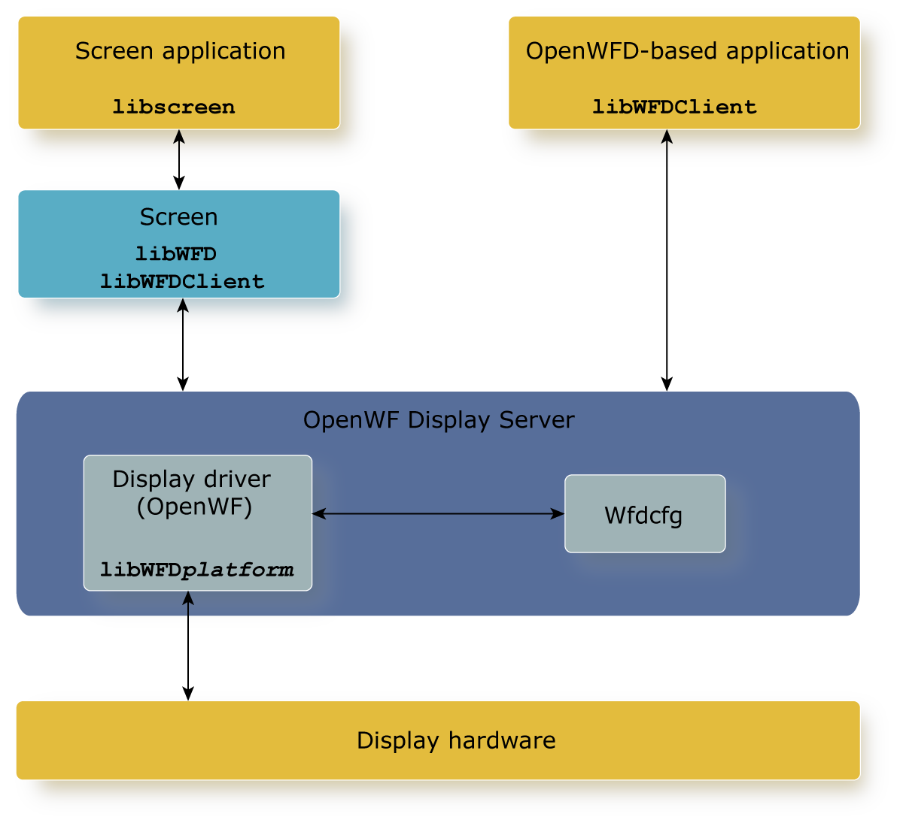

The OpenWF Display Server (wfd-server) enables applications to show image buffers on the display without using Screen.
The OpenWF Display Server is a resource manager that loads a platform-specific display driver. The OpenWF Display Server package provides the following:
Applications whose graphical content is considered critical, requiring assurance that the graphical content is shown accurately on the display, should use the set of QNX WFD extensions and the WFD API to post buffers directly to at least one display. Other applications can continue to use Screen to show content on the display.
Your system can simultaneously support applications that use Screen, and applications that use the OpenWF Display Server to show content to the display.

In the figure above, libWFDplatform is the name of your platform (e.g., J721e). This platform-specific driver is available from the set of Screen Board Support packages with QNX SDP 8.0 Screen.
The function wfdDeviceCommit() has the following exception: For each pipeline, if the last wfdBindSourceToPipeline() call specifies WFD_TRANSITIONS_AT_VSYNC, regardless of a change in the source, the call is blocked until a vsync is detected on the port.
The function wfdDeviceCommit() is allowed to execute while another wfdDeviceCommit() is in progress. A WFD_ERROR_BUSY is not returned.
There are custom QNX extensions defined in the wfd-server header file wfdext.h. Not all extensions are supported on all hardware platforms. Run wfdIsExtensionSupported() to find which extensions are supported on your platform.